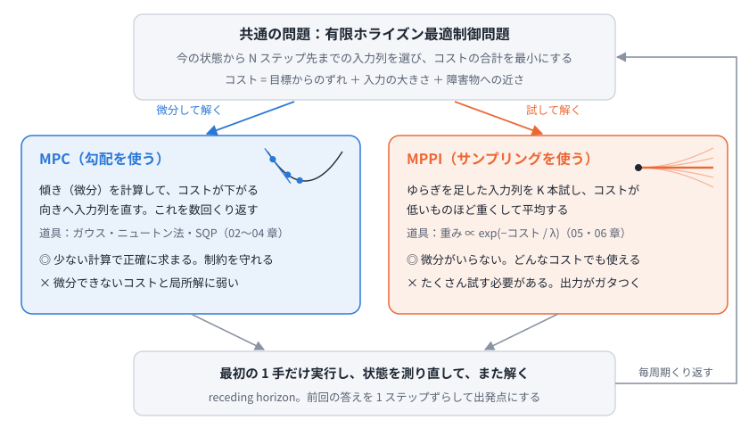
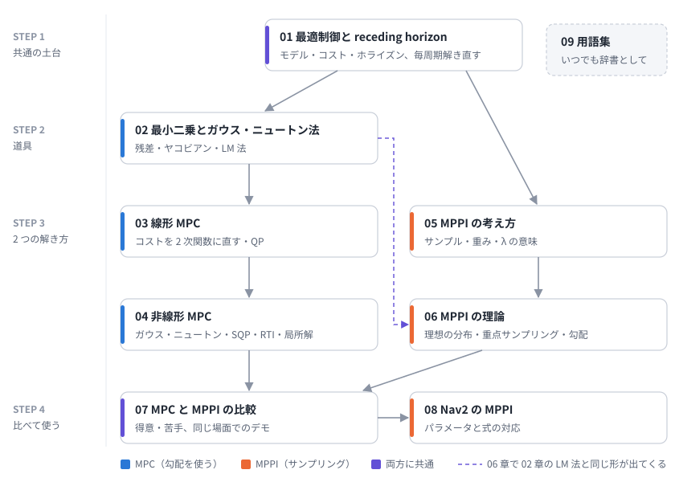

00. 学習ロードマップ
この教材は、移動ロボットの制御でよく使われる 2 つの方法、MPC (モデル予測制御) と MPPI (Model Predictive Path Integral) を、数式から順に理解するためのものです。終わったときに、次のことができるようになるのが目標です。
- 2 つの方法が「同じ問題を、違うやり方で解いている」ことを説明できる
- MPC の中身 (最小二乗、ガウス・ニュートン法、QP、SQP) を説明できる
- MPPI の重みつき平均の式と、λ の意味を説明できる
- Nav2 の MPPI のパラメータが、式のどこに当たるか分かる
ひとことで言うと
MPC も MPPI も、「少し先までの動きをモデルで予測し、コストがいちばん小さくなる入力の列を選び、最初の 1 手だけ実行する」をくり返します。違うのは、いちばん良い入力の列の探し方だけです。
- MPC: コストの傾き (微分) を計算して、良くなる向きへ入力の列を少しずつ直す
- MPPI: 入力の列をランダムにずらしたものをたくさん試し、コストが低いものほど重くして平均する

中心にある 1 つの問題
どちらの方法も、制御の周期ごとに次の 有限ホライズン最適制御問題 を解きます。
\[
\begin{aligned}
\min_{u_0, \dots, u_{N-1}} \quad & J = \sum_{t=0}^{N-1} \ell(x_t, u_t) + \phi(x_N) \\
\text{s.t.} \quad & x_{t+1} = f(x_t, u_t), \quad x_0 = \hat{x} \\
& u_{\min} \le u_t \le u_{\max}
\end{aligned}
\]
| 記号 | 意味 | 詳しくは |
|---|---|---|
| \(x_t\), \(u_t\) | 時刻 \(t\) の状態 (位置と向き) と入力 (速度と角速度) | 01 章 |
| \(f\) | ロボットのモデル。今の状態と入力から次の状態を計算する | 01 章 |
| \(\ell\), \(\phi\) | 各時刻のコストと、最後の時刻のコスト | 01 章 |
| \(N\) | ホライズン (何ステップ先まで考えるか) | 01 章 |
| \(\hat{x}\) | 今の状態 (センサから推定したもの) | 01 章 |
| \(\min\) の解き方 (MPC) | 傾きを使って入力の列を直す | 02 章, 03 章, 04 章 |
| \(\min\) の解き方 (MPPI) | 試して、重みつき平均する | 05 章, 06 章 |
この問題の解き方が 2 通りある、というのがこの教材の骨組みです。
必要な知識の地図

| 章 | 内容 | 演習 | 目安 |
|---|---|---|---|
| 01 最適制御問題と receding horizon | モデル・コスト・ホライズン、毎周期解き直す理由 | ex01 | 1 時間 |
| 02 最小二乗とガウス・ニュートン法 | 残差とヤコビアン、ガウス・ニュートン法、LM 法 | ex02 | 2 時間 |
| 03 線形 MPC | コストを入力列の 2 次関数に直す、制約と QP | ex03 | 1.5 時間 |
| 04 非線形 MPC | 連鎖律でヤコビアン、shooting、SQP、RTI、局所解 | ex04 | 2 時間 |
| 05 MPPI の考え方 | サンプルと重み、λ の意味、アルゴリズム | ex05 | 1.5 時間 |
| 06 MPPI の理論 | 理想の分布、重点サンプリング、ぼかしたコストの坂 | ex06 | 2 時間 |
| 07 MPC と MPPI の比較 | 式の対応、得意・苦手、同じ場面でのデモ | - | 1 時間 |
| 08 Nav2 の MPPI | パラメータと式の対応、調整の考え方 | - | 1 時間 |
| 09 用語集 | 日本語と英語の対応 | - | 辞書として |
おすすめの進め方
- 01 章で「解きたい問題」を固める。 ここが両方の方法の土台です。
- MPC の列 (02 → 03 → 04) を読む。 02 章の道具 (ガウス・ニュートン法) を、03 章で線形の場合、04 章で非線形の場合に使います。
- MPPI の列 (05 → 06) を読む。 06 章では、02 章の LM 法と同じ形の式が出てきます。
- 07 章で比べ、08 章で実際の Nav2 の設定に結びつける。
急ぐ場合は、目的に合わせて章を選んでもかまいません。
- MPPI を使いたいだけ: 01 → 05 → 07 → 08
- MPC だけ知りたい: 01 → 02 → 03 → 04 → 07
各章の最後にある「理解度チェック」で、説明できるかを確かめながら進めてください。
前提知識
- 微分 (偏微分、連鎖律)、行列とベクトルの積、転置、逆行列
- 確率の基本 (正規分布、期待値)
- Python と numpy が少し読めると、演習が楽になります
分からない言葉が出てきたら 09 用語集 を見てください。
学習を始める前の準備
リポジトリのトップの README に従って Python の環境を作り、次を実行してください。
python exercises/check_env.py
演習はすべて numpy / scipy / matplotlib だけで動きます。ROS は不要です。
理解度チェック (最終目標)
この教材を終えたとき、次の質問に答えられるようになっているはずです。
- MPC と MPPI は、何が同じで何が違うか?
- 計画した入力の列のうち、最初の 1 手しか実行しないのはなぜか?
- ガウス・ニュートン法の式 \(J^\top J\,\Delta = -J^\top r\) の各項は何を表すか?
- 入力に上限があるとき、「制約なしで解いた答えを上限で切る」だけではいけないのはなぜか?
- 非線形 MPC が、真正面に立つ人の手前で止まってしまうのはなぜか?
- MPPI の λ を小さくしすぎる・大きくしすぎると、それぞれ何が起きるか?
- MPPI の更新が「ぼかしたコストの坂を下っている」と言えるのはなぜか?
- Nav2 の
temperature、batch_size、time_steps、model_dtは、式のどこに当たるか?